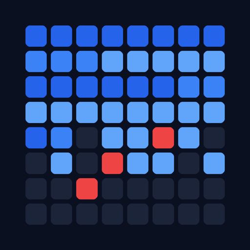

Every seek is computed, not sampled.
Winchester simulates a 1990s hard disk — its platters, its arm, its file system — and lets you hear it work. Not a recording on a loop: each sound comes from where the head was, where the next cluster is, and how long the platter takes to bring it round.
- iPhone and iPad
- iOS 17 or later
- Free
- No account, no network
- English and French
- read
- write
- system — darker in one piece, lighter in fragments
- programs
- documents
- temporary files
- archives
- directories
- swap file
- FAT
- free
What you hear
Three sounds, produced live by the simulated mechanics.
- The seek The arm jumps from one cylinder to the next. A short seek and a full stroke do not sound alike: every seek speeds up, coasts, slows down and settles, and a short one has no time to coast — so the distance changes the shape of the sound, not only its loudness.
- The return to the edge A sharp “clack”: on a FAT volume the arm goes back to the start of the partition to rewrite the allocation table, once per file moved.
- The hum The spindle, continuous, under everything else — the ball bearings of a 1993 drive beating once per turn, the smoother fluid bearing of the 2000s.
Around them, the events of a real drive’s life: the heads unsticking from the platter at power-on, the search for track 0, the thermal recalibration that drives made before 1997 did every few minutes, and the heads landing when the power is cut.
Headphones strongly recommended. The iPhone speaker erases the low end of the rotation and most of the arm’s transients. The Speaker preset raises the rotation to compensate, and Haptics only turns the sound off and puts the arm in your hand through the iPhone’s Taptic Engine.
The map
Watch the volume as it moves.
The Pass tab shows the cluster map of the disk being worked on — full screen if you want it. A block turns amber when it is read and turquoise when it is written, at the very instant the write is heard: the map runs on the same clock as the sound. The trace fades in a third of a second.
- Same colour, two shades. Darker means a file stored in one piece; lighter means one in fragments. You see what is tidied and what is still to be put back together.
- Dark grey is free. The gaps between files are what will fragment the next ones.
- The red block never moves. Windows has the swap file open, so the defragmenter tidies around it.
A second view draws the platter itself, with the arm where the simulation puts it. Under Instruments, the pass is measured as you listen: IOPS, throughput and seeks over the last minute, and where the time goes — moving the arm, waiting for the sector, transferring, computing.
Defragmenters
They do not do the same job, and it shows.
The period tools are modelled on the ones that shipped, and three more were written for Winchester from what those do badly. Pick one on the With which tool? screen; the tool of the disk’s era is preselected.
| Tool | Origin | What it does |
|---|---|---|
| Windows 95/98 Defragmenter | 1995 · FAT only | Packs everything to the start of the disk, in tree order, evicting whatever is in the way. |
| Windows XP Defragmenter | 2001 · NTFS only | Only repairs files in pieces, by copying them into a hole that is already free. |
| JkDefrag 3.36 | 2008 | Tidies the volume by zones and fills the holes, never evicting. Seven other modes under Advanced options. |
| UltraDefrag 7.1.1 | 2018 · all formats | Merges the small splinters without moving the big blocks, and evicts nobody. |
| Frontier compaction | Winchester · FAT only | Packs the volume in the order it is in; no write ever lands on data that is still referenced. |
| Thrifty merge | Winchester · NTFS only | Only copies the small pieces, next to their big neighbour or into the nearest hole. |
| Smart tidying | Winchester · all formats | Lays what the boot reads at the head, in the order it reads it, then packs the rest behind. |
A pass heard to the end leaves a Report: the map before and after, the numbers before → after, and what the tool had to say. From there, Try another tool on the same starting volume, compare two passes side by side — without a verdict, since a tool that tidies better and a tool that goes faster are not doing the same job — or boot the tidied disk and hear what the tidying changed.
Period disks
Twenty disks with their life already lived.
The Disks tab opens on two demos ready to play — a Windows 98 boot and a defragmentation — each one Start away. Below them, a gallery of twenty period disks across five eras, 1993, 1996, 1999, 2003 and 2007: an office worker, a family, a developer, a gamer, and a 1993 tinkerer unpacking BBS archives from floppies. From a 170 MB FAT16 at 3,600 rpm to a 320 GB NTFS at 7,200, each is filled the way a person actually filled it — install after install, day after day — through the allocator of its own file system. Nobody set its fragmentation: it is what that history left behind.
A disk’s page offers four ways to hear it:
- Boot this OS — from MS-DOS 6.22 and Windows 3.1 to Vista, reading the files where that disk keeps them.
- Install this disk — its first day, replayed from the installation media, every file written where the allocator put it.
- Relive this disk — its whole history scrolls past at a day, a week or a month per second, and the days worth hearing are named along the way: pick Listen to day N to hear one in real time.
- Defragment this disk — with the tool of your choice.
Build your own
Build a used disk walks through six steps — the hardware, the format, the system and the software, the period of use, the habits, the seed — and builds it on the device. You write a history, never a fragmentation rate; the result is only known once the disk is made. What you build is kept under My disks.
Long passes
A pass takes as long as it takes.
Nothing is decreed: the disk sets the pace — seek, rotational latency, transfer — so a pass lasts from a few seconds to several hours depending on the disk and the tool. It keeps playing with the screen locked, with play and pause in Control Center, and the pass banner tells you where it is when you come back.
- Ambient mode turns the pass into background sound: a near-black screen with the platter’s outline and its arm, the time listened, and a sleep timer that fades the pass out and stops it.
- A phone call, or headphones pulled out, pauses the pass instead of letting it run on in silence, and it picks up where it stopped.
Details
What it needs, and what it asks for.
- iPhone and iPad, iOS 17 or later. Free, with no in-app purchase.
- Nothing to sign up for, nothing to grant. No account, no permission request, and no network access at all: everything is computed on the device.
- English and French, following your device’s language.
- Accessible. Text follows your Dynamic Type size, VoiceOver reads the cluster map in four zones, and Reduce Motion stops the platter and the map’s trace.
Curious what is under it? How it works follows a block request from the file system to the speaker.
Privacy
Nothing leaves the device.
No server, no analytics, no advertising, no third-party SDK. The disks you build, your sound settings and what you have listened to stay on your iPhone or iPad.